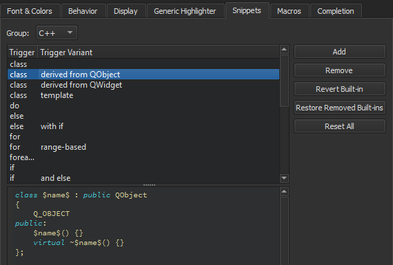

Completing Code
As you write code, Qt Creator suggests properties, IDs, and code snippets to complete the code. It provides a list of context-sensitive suggestions to the statement currently under your cursor. Press Tab or Enter to accept the selected suggestion and complete the code.
The following image displays suggestions for completing C++ code:

The following image displays suggestions for completing QML code:

To open the list of suggestions at any time, press Ctrl+Space. If only one option is available, Qt Creator inserts it automatically.
When completion is invoked manually, Qt Creator completes the common prefix of the list of suggestions. This is especially useful for classes with several similarly named members. To disable this functionality, uncheck Autocomplete common prefix in the code completion preferences. Select Tools > Options > Text Editor > Completion.
By default, code completion does not consider case. To apply full or first-letter case-sensitivity, select Full or First Letter in the Case-sensitivity field.
Summary of Available Types
The following table lists available types for code completion and icon used for each.
| Icon | Description |
|---|---|
| A class | |
| An enum | |
| An enumerator (value of an enum) | |
| A function | |
| A private function | |
 | A protected function |
| A variable | |
| A private variable | |
| A protected variable | |
 | A signal |
| A slot | |
 | A private slot |
| A protected slot | |
 | A C++ keyword |
 | A C++ code snippet |
| A QML type | |
| A QML code snippet | |
| A macro | |
 | A namespace |
Completing Code Snippets
Code snippets can consist of multiple variables that you specify values for. Select an item in the list and press Tab or Enter to complete the code. Press Tab to move between the variables and specify values for them. When you specify a value for a variable, all instances of the variable within the snippet are renamed.
The following image shows a C++ code snippet:

The following image shows a QML code snippet:

Editing Code Snippets
Code snippets specify code constructs. You can add, modify, and remove snippets in the snippet editor. To open the editor, select Tools > Options > Text Editor > Snippets.
The following image shows built-in C++ code snippets:

The following image shows built-in QML code snippets:

Qt Creator provides you with built-in snippets in the following categories:
- Text snippets, which can contain any text string. For example, code comments
- C++ code snippets, which specify C++ code constructs
- CMake code snippets that you can use when editing
CMakeLists.txtfiles in the CMake editor - QML code snippets, which specify QML code constructs
- Nim code snippets, which specify Nim code constructs
Adding and Editing Snippets
Select a snippet in the list to edit it in the snippet editor. To add a new snippet, select Add. Specify a trigger and, if the trigger is already in use, an optional variant, which appear in the list of suggestions when you write code. Also specify a text string or C++ or QML code construct in the snippet editor, depending on the snippet category. You can use predefined variables in snippets. The snippet editor provides you with:
- Highlighting
- Indentation
- Parentheses matching
- Basic code completion
Specify the variables for the snippets in the following format:
$variable$
Specify Qt Creator variables in the following format:
%{variable}
For example, the following variable expands to the name of the current project: %{CurrentProject:Name}.
Use unique variable names within a snippet, because all instances of a variable are renamed when you specify a value for it.
To determine the case of values you enter in snippets, use the following modifiers:
:cconverts the initial letter of the string to upper case:lconverts the string to lower case:uconverts the string to upper case
For example, add the following line to the class snippet to specify that the function name is converted to all lower case characters regardless of how you specify the value of the $name$ variable:
void $name:l$() {}

The snippet editor does not check the syntax of the snippets that you edit or add. However, when you use the snippets, the code editor marks any errors by underlining them in red.
To discard the changes you made to a built-in snippet, select Revert Built-in.
Removing Snippets
Several similar built-in snippets might be provided for different use cases. To make the list of suggestions shorter when you write code, remove the built-in snippets that you do not need. If you need them later, you can restore them.
To remove snippets, select a snippet in the list, and then select Remove. To restore the removed snippets, select Restore Removed Built-ins.
Resetting Snippets
To remove all added snippets and to restore all removed snippets, select Reset All.
Note: If you now select OK or Apply, you permanently lose all your own snippets.
Completing Nim Code
You can use the Nimsuggest tool to query .nim source files and obtain suggestions for code completion.
To use Nimsuggest, you must install it on the development PC. Then select Tools > Options > Nim > Tools, and enter the path to the tool executable in the Path field.